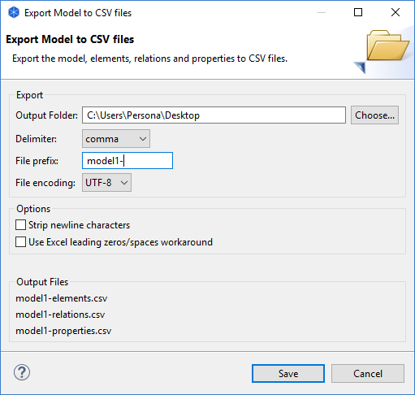

您可以将模型的数据导出为CSV格式（逗号分隔值）。数据导出为三个不同的文件： “elements.csv”、“relations.csv”和“properties.csv”。所有数据对象都由唯一标识符标识，因此属性将引用其他文件中的元素或关系。
此选项可从主“文件- >导出菜单的”将模型导出为 CSV... “菜单项中使用。在模型树或视图中选择模型后，将启用此菜单项。

将模型导出为CSV
存放结果的文件夹
选择输出文件的文件夹。
分隔符
选择CSV字段分隔符 -逗号、分号或制表符。
文件前缀
提供可选的前缀以添加到文件名中。例如， “MyModel-”会将文件名更改为“MyModel-elements.csv”、“MyModel-relations.csv”和“MyModel-properties.csv”。
文件编码
选择要使用的文件编码- ANSI、 UTF-8或 UTF-8 BOM。有些程序更喜欢一种或另一种文件编码。例如 ，如果 CSV文件中存在 Unicode字符 ， MS Excel更喜欢 “UTF-8 BOM”编码。
去掉换行符
如果选中，将从多行文本（如文档）中删除所有换行符。
Excel兼容
如果选中，文本将以零或带引号的空格开头，以便数据正确导入到Excel中。此外，以“=”、“+”、“-”或“@”字符开头的任何文本字段都将以空格作为前缀，以便Excel不会将其解释为公式。
您可以将CSV数据导入现有模型。CSV文件的格式需要如下所述。如果要创建新概念，则元素和关系ID是可选的，但如果元素或关系被其他概念或属性引用，则需要为其提供ID。如果提供ID则它需要使用字母数字字符对文件唯一 ，例如 - “id1”、 “8fe456d”、 “actor3”。如果 CSV文件已导出、编辑和重新导入 ，则可能是现有概念的 ID。如果未提供身份证件 ，则应显示空白字段 “”。在这种情况下 ，导入时将生成一个 ID。
将CSV数据导入现有模型时 ，中只能提供一个或全部三个文件文（简体元素、关系、属性）。通常 ，英您将提供所有三个文件。文件名格式如下文（
"xxx-elements.csv"
"xxx-relations.csv"
"xxx-properties.csv"
前缀（ “xxx” ）是可选的，但如果使用，所有三个文件必须相同。所有三个文件名都需要匹配-例如： “myname-elements.csv”、“myname-relations.csv”和“myname-properties.csv”。至少，文件名需要包含“。csv "extension和名称以" elements "、" relations "或" properties "结尾。
 了解每个文件所需格式的最佳方法是将Archi模型导出为 CSV格式 ，然后在文本编辑器中打开导出的文件。
了解每个文件所需格式的最佳方法是将Archi模型导出为 CSV格式 ，然后在文本编辑器中打开导出的文件。
第一行是“header”行，如下所示：
"ID","Type","Name","Documentation","Specialization"
然后是一行或多行数据。例如：
"ID","Type","Name","Documentation","Specialization"
"id-275af0e8c76","BusinessActor","Archisurance","This is the company",""
"id-1800f4e23cb","ApplicationComponent","Web portal","","Portal"
| CN | 元素的唯一标识符。如果在relations.csv和properties.csv文件中引用它，则需要这样做。 |
| <g id="Bold"><g id="Bold">课程</g>类型</g> | 元素的类型。例如“BusinessActor”、 “ApplicationComponent”。 |
| 姓名 | 元素的名称。 |
| 文档 | 元素的文档。可以为空。 |
| 专业化 | 元素的专业化的名称。可以为空。 |
第一行是“header”行，如下所示：
"ID","Type","Name","Documentation","Source","Target","Specialization"
然后是一行或多行数据。例如：
"ID","Type","Name","Documentation","Source","Target","Specialization"
"id-275af0e8c76","AccessRelationship","","","id-275af0e8c76","id-1800f4e23cb",""
"id-4f5af4b8c74","AssignmentRelationship","","","id-3755f0e8c76","id-2800f4e23ca",
| CN | 元素的唯一标识符。如果在relations.csv和properties.csv文件中引用它，则需要这样做。 |
| <g id="Bold"><g id="Bold">课程</g>类型</g> | 关系类型。例如， “AccessRelationship”、 “AssignmentRelationship”。 |
| 姓名 | 关系的名称 |
| 文档 | 关系的文档。可以为空。 |
| 人员来源 | 关系的源概念的ID。这可以是 elements.csv或 relations.csv文件中概念的 ID ，也可以是将导入到的模型中的现有概念。 |
| 目标 | 关系的目标概念的ID。这可以是 elements.csv或 relations.csv文件中概念的 ID ，也可以是将导入到的模型中的现有概念。 |
| 专业化 | 关系的专业化的名称。可以为空。 |
第一行是“header”行，如下所示：
"ID","Key","Value"
然后是一行或多行数据。例如：
"ID","Key","Value"
"id-275af0e8c76","Cost","34"
"id-275af0e8c76","Location","Office"
| CN | 此属性所属的概念的ID。这可以是或 elements.csv文件中概念的 relations.csv ID也可以是将导入到的模型中的现有概念。如果同一概念有多个属性 ，则可以出现多次。 |
| 项目名 | 属性的名称 |
| 内容 | 属性的值 |
特殊键和值可用于某些概念：
AssociationRelationship - 键为“定向” ，值为 “假” ，或 “真”
AccessRelationship - "Access_Type"的键和"Write"、"Read"、"Access"或"ReadWrite"的值
InfluenceRelationship - “Influence_Strength”的键和任何字符串的值
结点 - “Junction_Type”的键和 “Or”的 “And”的值
将CSV文件导入 Archi时 ，您可以在 “导入”对话框中选择三个 CSV文件中的任何一个。如果有相应的 “* .csv”文件 ，则这些文件将同时自动导入。
如果您不想将CSV数据导入现有工作模型只需创建一个新的空模型选择它 ，然后导入即可。这实际上相当于 “CSV中的新模型”。
也可以通过将模型导出到CSV文件、编辑模型并重新导入 ，将 CSV数据合并/更新到现有模型中。如果模型概念或属性已经存在（由其 ID表示 ） ，并且 CSV行条目包含与模型中不同的数据 ，则更新模型。例如 ， ID为 “9240f5bf”、名为 “BA1”且没有文档的业务参与者可以使用如下行条目进行更新 ：
"ID", "类型", "名称", "文档", "专业化认证"
"9240f5bf", "BusinessActor", "新名称", "其他文档", "专业化认证名称"
或者，您可以通过编辑属性 CSV文件并使用新属性条目引用现有概念 ID来向概念添加新属性。
以下是将CSV数据导入模型时的规则：
您只能将一个或两个CSV文件导入现有模型。如果仅导入 “elements.csv”文件 ，则仅导入元素。如果然后导入使用相应概念 ID的 “relations.csv”文件 ，则可以仅导入关系。 “properties.csv”文件也是如此。
如果手动创建CSV文件 ，请确保使用 UTF-8格式保存它们以保留所有特殊字符。
注意-目前无法以CSV格式导入和导出查看图表信息。